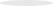

<!--
  Generated template for the SpaceDetailFeedback3Page page.

  See http://ionicframework.com/docs/components/#navigation for more info on
  Ionic pages and navigation.
-->
<ion-content padding>
    <div class="feedback3_container">
      <ion-grid>
        <ion-row class="feedback3_img">
            
        </ion-row>
        <ion-row class="feedback3_shadow">
            
        </ion-row>
        <ion-row class="feedback3_thirdStep">
          <div class="thirdStep">
              <div class="blueCircle" (click)="backToFeedback1()"></div>
              <div class="blueLine"></div>
              <div class="blueCircle" (click)="backToFeedback2()"></div>
              <div class="blueLine"></div>
              <div class="blueCircle"></div>
          </div>
        </ion-row>
        <ion-row class="feedback3_welcome">
            Votre commentaire a été ajouter, Merci
            pour votre rasds sdflm !
        </ion-row>
        <ion-row class="feedback_btn_row">
            <button class="feedback_btn" (click)="close()">
                Okey
            </button>
        </ion-row>
      </ion-grid>
    </div>

</ion-content>
